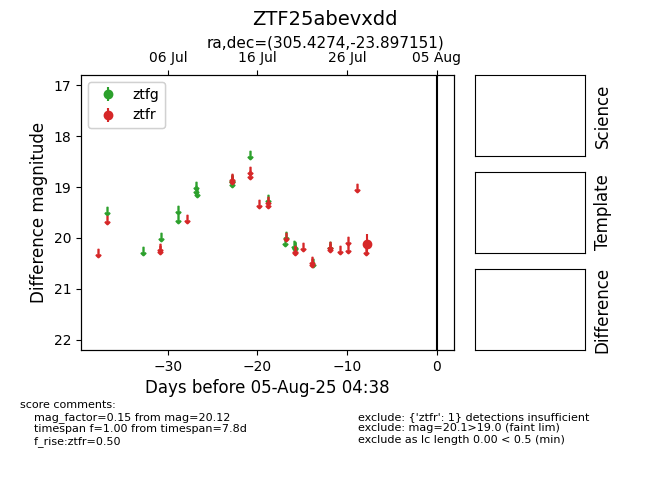

Target ZTF25abevxdd at 2025-08-05 04:38, see:
FINK: fink-portal.org/ZTF25abevxdd
Lasair: lasair-ztf.lsst.ac.uk/objects/ZTF25abevxdd
ALeRCE: alerce.online/object/ZTF25abevxdd
alt names
ZTF25abevxdd (ztf,fink)
coordinates:
equatorial (ra, dec) = (305.4274,-23.89715)
galactic (l, b) = (19.5702,-29.80137)
photometry
last ztfr=20.12
1 ztfr detections
